服务模版说明文档
服务说明
本文介绍容器服务部署mariadb实现托管版多租户的流程，本示例对应的git地址。
根据该服务模板构建的服务默认包含三种套餐：
| 套餐名 | vCPU与内存 | 系统盘 |
|---|---|---|
| 低配版 | 1vCPU 1GiB | ESSD云盘 20GiB PL0 |
| 基础版 | 2vCPU 2GiB | ESSD云盘 40GiB PL0 |
| 高配版 | 2vCPU 4GiB | ESSD云盘 80GiB PL0 |
本示例创建过程大约持续1分钟，当服务变成待提交后构建成功。
服务使用前提准备
本示例需要提前准备ack集群，且集群中需要安装mariadb-operator, 推荐使用基础资源配置服务 ，进行基础资源配置一键安装，可以选择已有ack集群也可以新建ack集群配置基础资源。如果是选择已有ack, 要确保ACK中已经安装阿里云Prometheus插件。
注意：一个集群只需配置一次基础资源，且给集群打开删除保护，避免误删除。
服务架构
本部署架构为ACK多租户部署，架构如下图所示： 1. 使用ingress根据域名路由到各个租户的mariadb 2. 每个租户一个k8s namespace，用namespace隔离 3. mariadb使用yaml部署
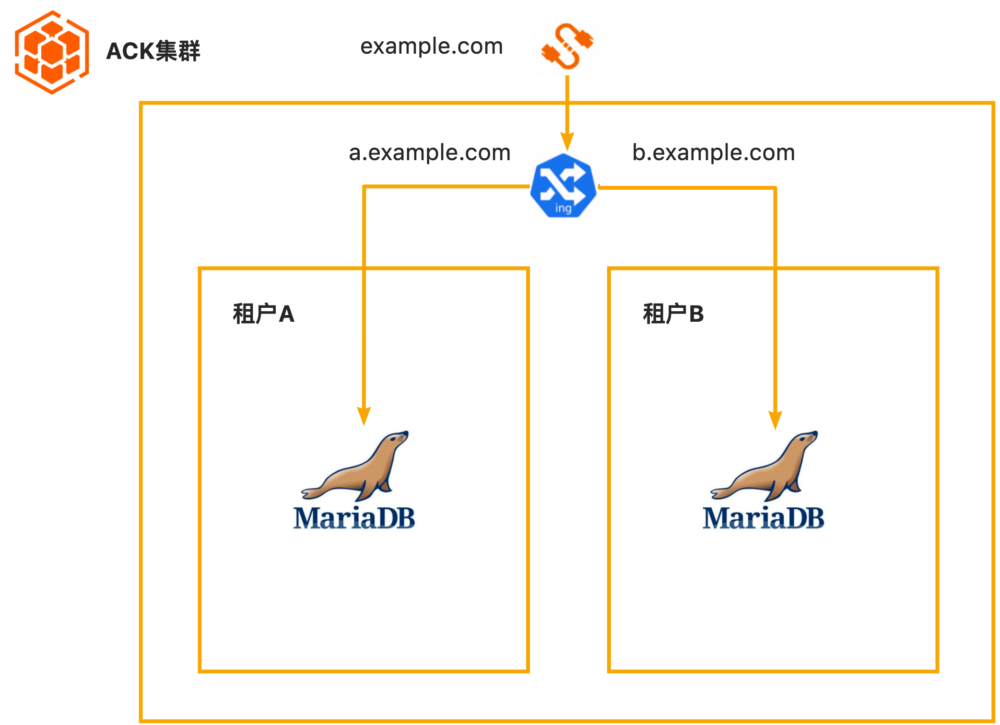
开启Prometheus监控配置
该服务支持配置Prometheus监控，服务实例部署成功后，服务商及其租户都能在控制台查看监控大盘, 开启Prometheus监控需要以下配置(每个集群配置一次即可)
ACK集群中修改Prometheus的配置【需手动配置】
- 到容器服务控制台找到自己的集群，修改集群中prom-agent的启动参数，在“arms-prom”的namespace下找到名为“arms-prometheus -ack-arms-prometheus”的Deployment，点击"查看yaml"， 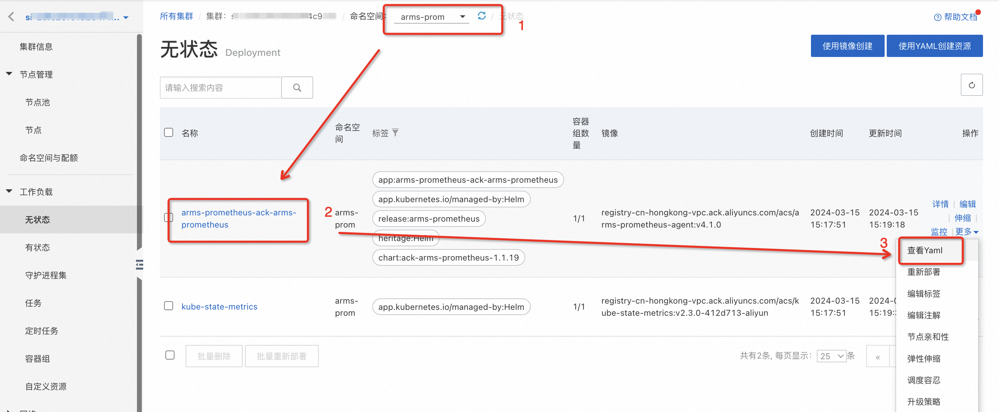 找到启动参数，添加一行以下内容后，点击"更新"
--nslabelSelector=tenant_userid,tenant_clusterid,tenant_token
如下图所示: 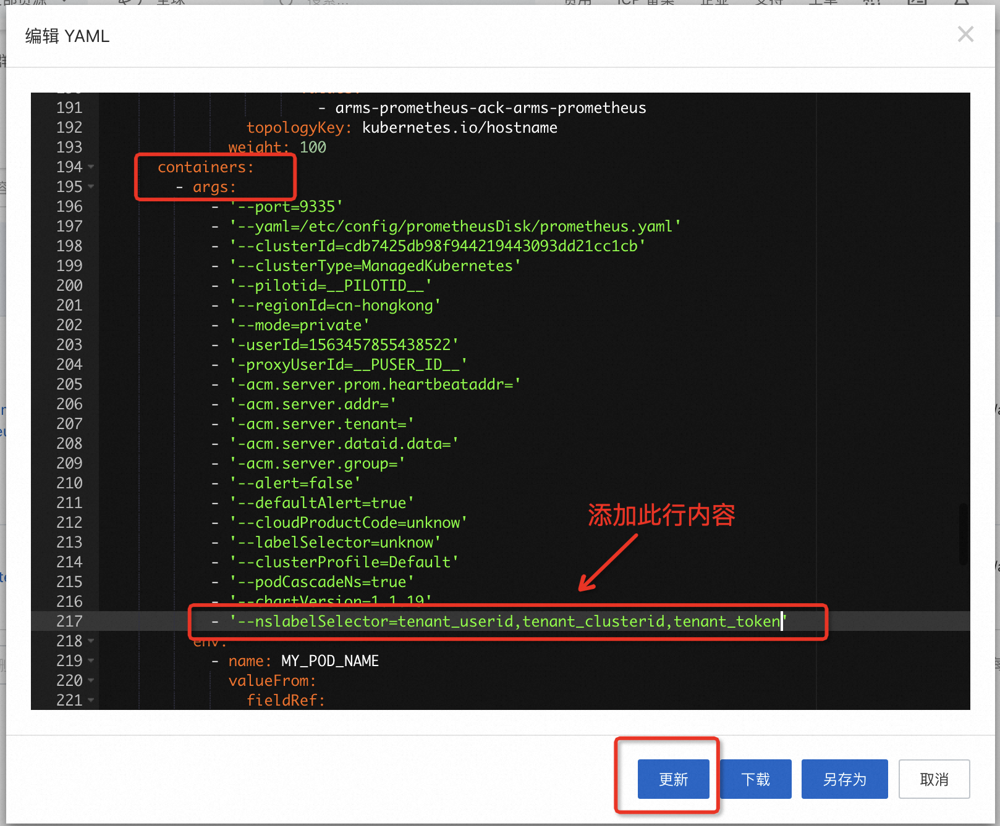 2.到ARMS控制台 找到ACK集群对应的Promethues实例，也可以在容器控制台跳转到对应的Promethues实例，如下图所示： 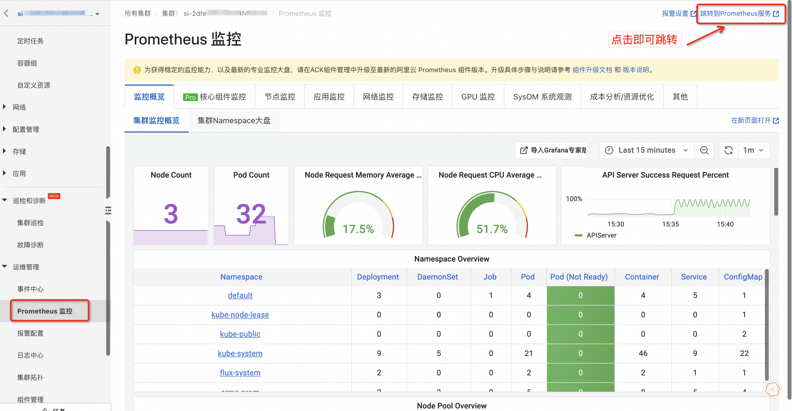 修改Promethues实例的"服务发现"配置，开启自动同步集群内ServiceMonitor，如下图所示： 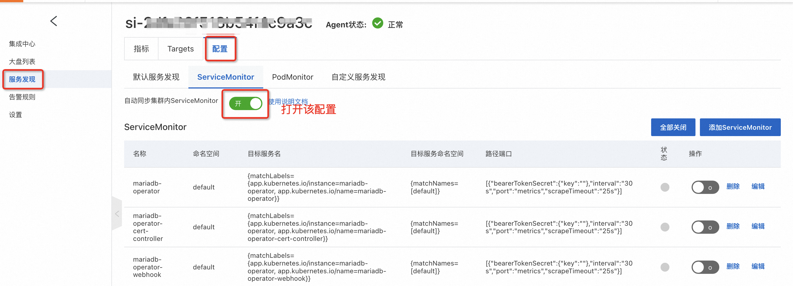 配置Promethues实例的采集规则，如下图所示，点击"编辑Prometheus.yaml" 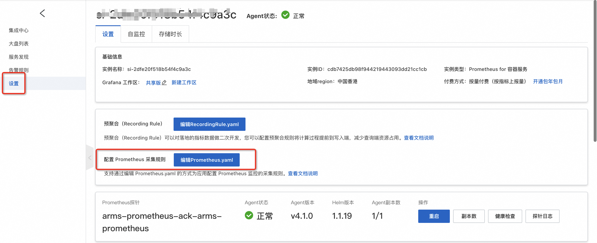 添加以下内容，将下边这段内容中值替换后，添加到Prometheus.yaml中
remote_write:
- basic_auth:
password: fake-AK-secret #服务商的AK信息
username: fake-AK-id
url: http://xxxx #当前Prometheus实例的remoteWrite内网地址
其中username和password的值替换为您实际的AK信息，url的值替换为当前Prometheus实例的remoteWrite内网地址，可以在以下位置得到。 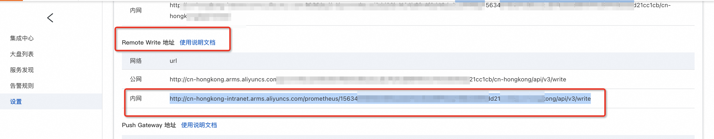 Prometheus.yaml示例如下： 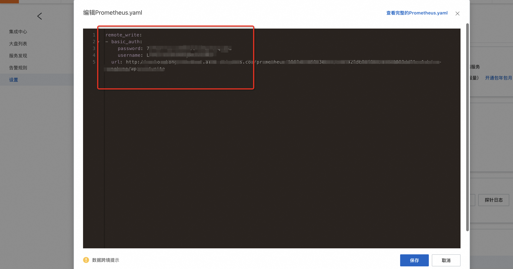
模板中添加租户标签
该服务的架构为用namespace隔离各个租户的资源，为了区分各个租户的监控指标，需要给每个namespace打上租户标签，租户标签内容如下：
tenant_userid: '{{ aliUid }}'
tenant_clusterid: '{{ tenantClusterId }}'
tenant_token: '{{ tenantToken }}'
tenant_cloudproductcode: '{{ tenantCloudProductCode }}'
该示例服务模板中已经正确配置该租户标签，可直接使用，无需重新配置。示例如下：
ClusterNameSpaceApplication:
Type: ALIYUN::CS::ClusterApplication
Properties:
YamlContent:
Fn::Sub:
- |
apiVersion: v1
kind: Namespace
metadata:
name: '${Name}'
labels:
tenant_userid: '{{ aliUid }}'
tenant_clusterid: '{{ tenantClusterId }}'
tenant_token: '{{ tenantToken }}'
tenant_cloudproductcode: '{{ tenantCloudProductCode }}'
- Name: '{{ serviceInstanceId }}'
配置产品标识和对应的大盘链接
托管版多租服务使用计算巢提供的Prometheus能力，需要设置服务标识和监控大盘信息： 1. 服务标识：表示服务在监控系统中的唯一标识，该服务中使用"cn-mariadb"为服务标识，cn-mariadb用于测试，所有服务共享使用该产品标识。目前cn-mariadb 已开通杭州和香港两个地域，支持在这个两个地域下测试。若需要使用专用服务标识，详情可以通过工单或钉钉交流群咨询计算巢开发同学。 2. 监控大盘设置包括监控大盘标题和Grafana大盘链接，监控大盘信息与服务标识是对应关系，在服务标识为cn-mariadb时，大盘标题默认为：MySQL Exporter Quickstart and Dashboard，大盘链接也是固定内容，无需修改。如需要修改大盘信息，详情可以通过工单或钉钉交流群咨询计算巢开发同学。 该示例服务中已经配置好了监控大盘信息，无需修改，保持默认即可，配置示例如下： 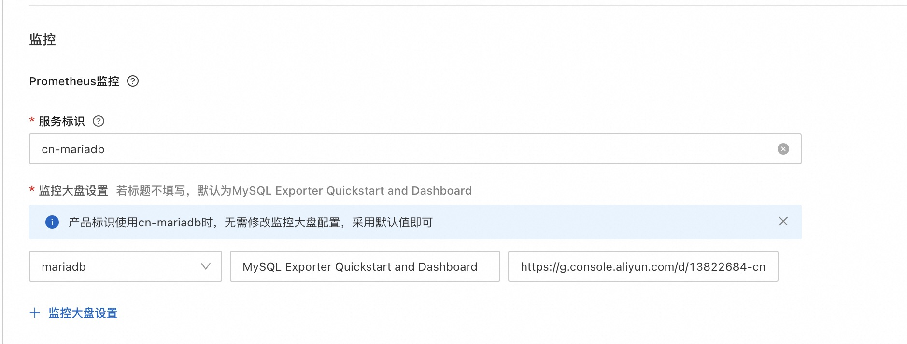
服务构建计费说明
测试本服务构建无需任何费用，创建服务实例涉及的费用参考下文"服务实例计费说明"。
RAM账号所需权限
本服务需要对ECS、VPC等资源进行访问和创建操作，若您使用RAM用户创建服务实例，需要在创建服务实例前，对使用的RAM用户的账号添加相应资源的权限。添加RAM权限的详细操作，请参见为RAM用户授权。所需权限如下表所示。
| 权限策略名称 | 备注 |
|---|---|
| AliyunCSFullAccess | 管理容器服务服务（CS）的权限 |
| AliyunROSFullAccess | 管理资源编排服务（ROS）的权限 |
| AliyunComputeNestUserFullAccess | 管理计算巢服务（ComputeNest）的用户侧权限 |
| AliyunComputeNestSupplierFullAccess | 管理计算巢服务（ComputeNest）的服务商侧权限 |
| AliyunARMSFullAccess | 管理业务实时监控服务（ARMS）的权限 |
服务实例计费说明
测试本服务在计算巢上的费用主要涉及：
- 导入的ACK集群的费用
- 在ACK集群新建的磁盘、网络等费用
服务实例部署流程
部署参数说明
| 参数组 | 参数项 | 说明 |
|---|---|---|
| 服务实例 | 服务实例名称 | 长度不超过64个字符，必须以英文字母开头，可包含数字、英文字母、短划线（-）和下划线（_） |
| 地域 | 服务实例部署的地域 | |
| 数据库root账号密码 | 各个租户的数据库管理密码 |
部署步骤
- 部署链接

- 单击部署链接，进入服务实例部署界面，根据界面提示，填写参数完成部署 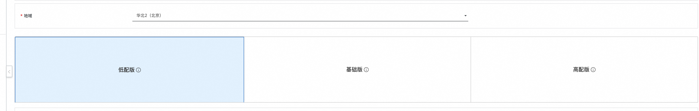
- 参数填写完成后可以看到对应询价明细，确认参数后点击下一步：确认订单
- 确认订单完成后同意服务协议并点击立即创建 进入待部署阶段。 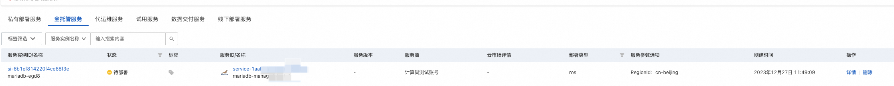
- 在用户侧进入待部署状态后需要服务商同意用户的部署 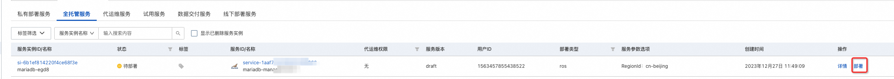 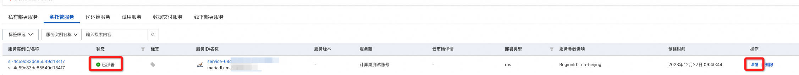
- 等待部署完成后就可以开始使用服务，通过Endpoint即可访问mariadb 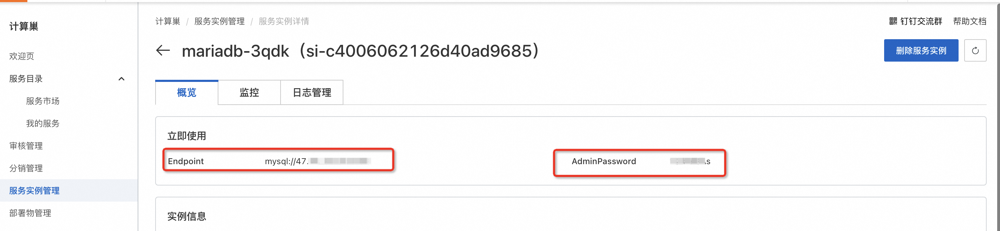
- 部署成功后，用户侧和服务商都可以在控制台查看监控大盘 用户侧： 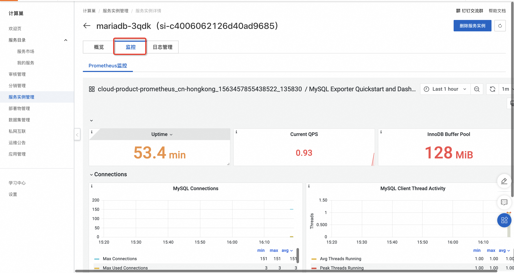 服务商侧： 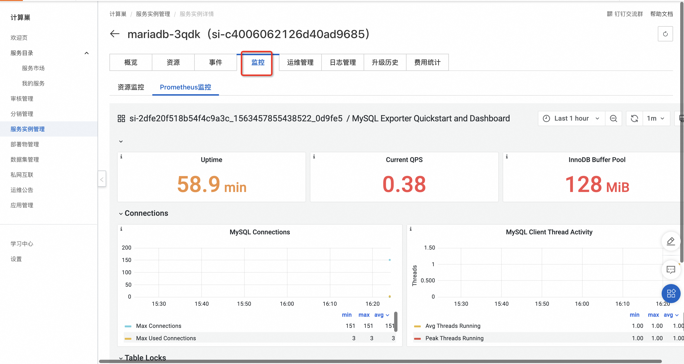
售卖配置
当前服务因为没有配置售卖链路，所以用户侧部署时候需要服务商的二次确认，当服务上架到阿里云云市场后，就可以不经过服务商的二次确认就可以完成部署。
- 计算巢服务审核上线 上到云市场的商品需要在计算巢这里完成上架过程，走通预发布和发布流程，经过审核后上线。 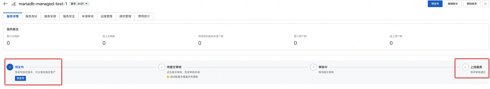
- 点击到云市场创建商品，选择类目SaaS服务计算巢托管版
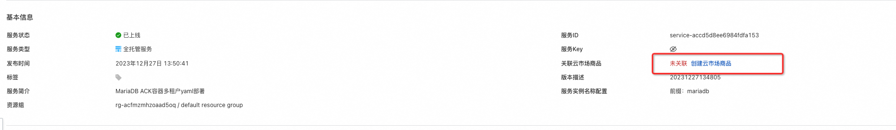

- 按要求添商品信息
- 在销售信息时候选择预付费模式，并配置三个套餐，给三个套餐配置相应的价格 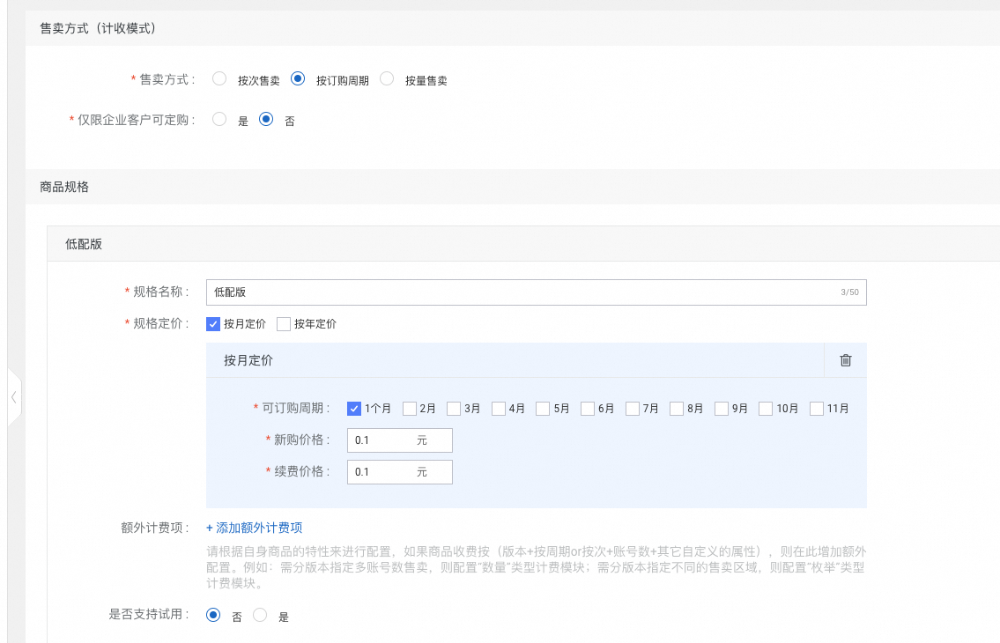 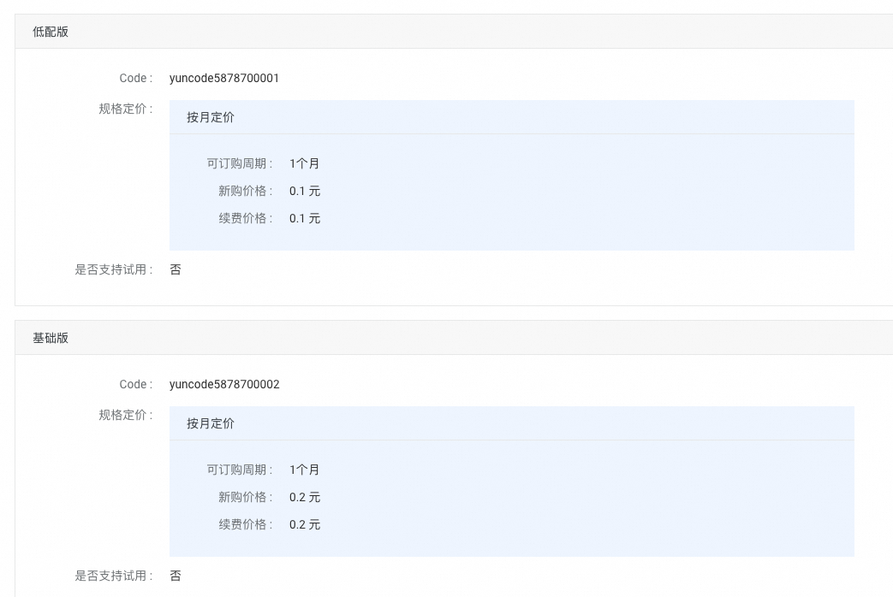
- 完成商品上线和审核
- 到计算巢完成套餐和云市场商品的绑定 (如果名字一样会自动匹配上，可以忽略这个步骤) 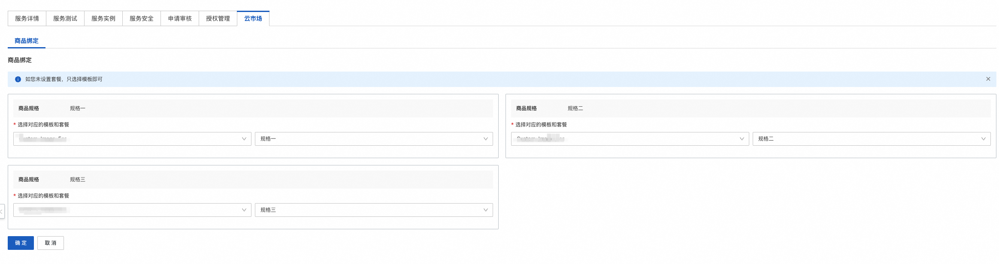
-
完成部署 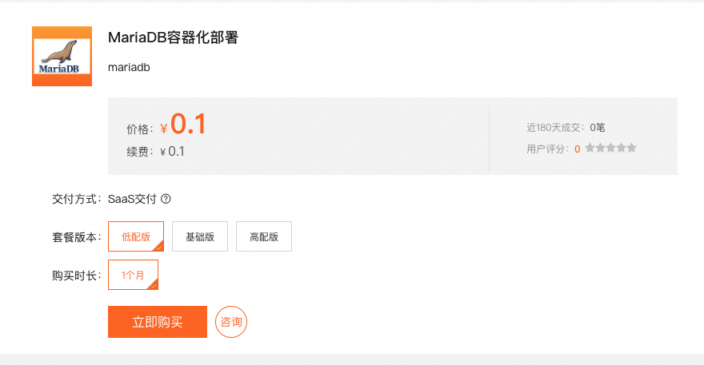 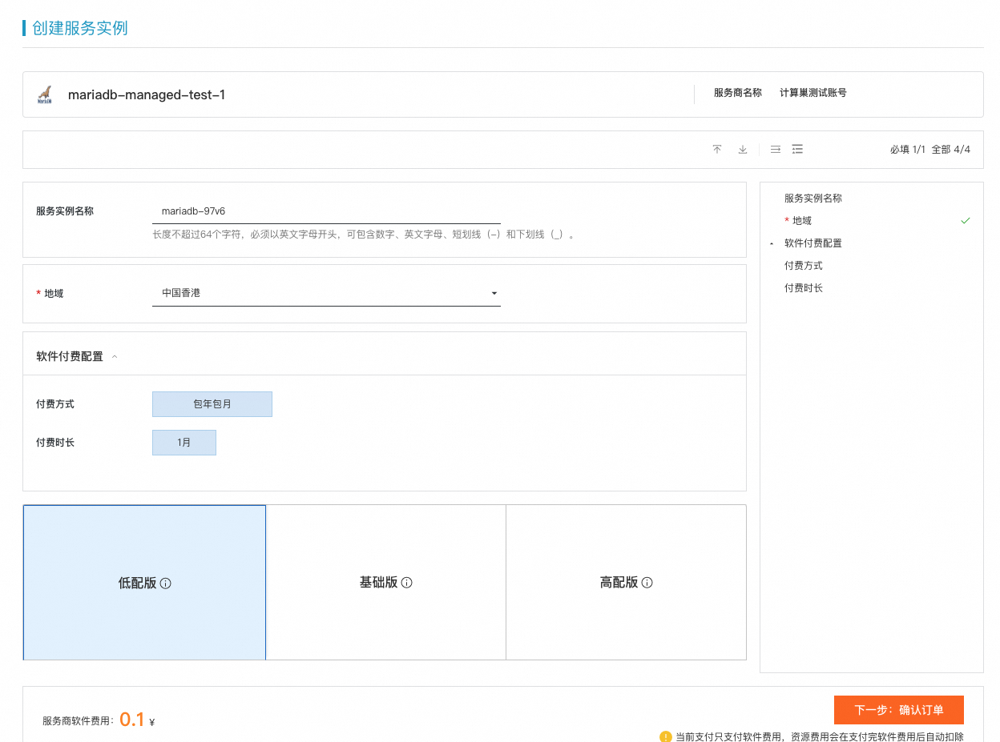

-
至此完成了一个托管版上到云市场并使用的全过程